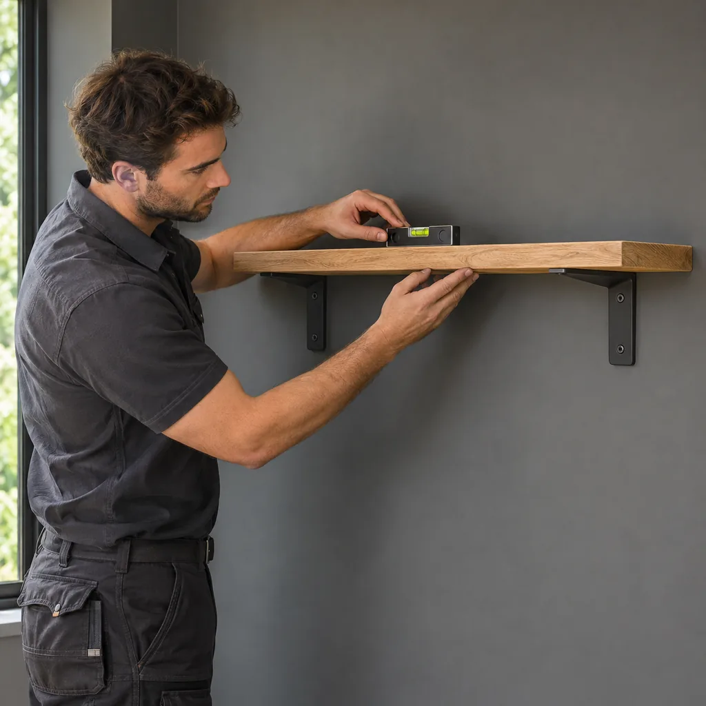

Wall shelves & brackets
We help put your shelves where they are useful and look right in your home. Before installation, we discuss their position, intended use and suitable supports.
LUXURY HANDYMAN COMPANY / OUR SERVICES
Small additions.
Everyday comfort.
Sometimes it is the small things that make a home work better—a shelf where you need it, a hook in the right place or a fitting that needs attention. We take care of these details with you.
Serving Naples, Bonita Springs & Marco Island.

THE DETAILS THAT MATTER
We help put your shelves where they are useful and look right in your home. Before installation, we discuss their position, intended use and suitable supports.
Coat hooks, towel rails, curtain rods and everyday holders—the little additions that make your home easier to use. We fit them carefully to a suitable surface.
A loose fitting or a shelf that needs adjusting deserves attention too. We check what is causing the problem and discuss a suitable fix before carrying out the work.
YOUR VISIT, STEP BY STEP
The number and size of shelves or fittings, wall material, bracket system and any adjustment to existing fixings affect the job. Tell us what you want installed and how you plan to use it so we can discuss suitable supports, materials and the price before work begins.
Share the number and dimensions of the shelves or fittings, the product details and their intended use. Tell us what wall they will be fitted to, what hardware you have and whether an existing fitting needs adjustment or removal.
We discuss the scope, materials, price and timing before work begins. Materials used for the job are paid by the client and shown on the invoice alongside labor.
We keep you updated at each stage and remain available for questions after the work is finished. For a condo or managed property, let us know about access, parking, elevator reservations or permitted work hours when arranging the visit.
THE WAY WE WORK
We treat the small jobs with the same care as the larger ones. We work as if it were our own home, paying attention to the position, the fixings and the finished result. We explain the agreed work and keep you informed at each stage.
Our contact does not end when the installation is complete. If you have questions or notice another detail that needs attention, we stay available to discuss it with you.
BEFORE WE GET STARTED
The wall, bracket and fixing ratings determine what can be installed and supported. Plumbing connections, electrical work and structural alterations are not included.
We can discuss and purchase suitable materials for the agreed work. Material costs are paid by the client and shown on the invoice alongside labor.
Call or message us on WhatsApp with your location, the work needed and your preferred date. Visits are arranged individually. Working hours are Monday–Friday, 8:00 AM–6:00 PM, and Sunday, 8:00 AM–4:00 PM, Eastern Time. Saturday is closed.
Send the shelf and bracket details so we can review the installation. Suitability depends on the wall, fixing points, hardware and manufacturer’s instructions. We agree the position with you before installation.
There is no single safe weight for every shelf. Capacity depends on the shelf, brackets, fixings and wall together. We consider the manufacturer’s ratings and what you intend to store before agreeing the installation.
Yes, we can discuss these household fittings along with shelves and holders. The surface and fixing points must be suitable. Plumbing connections, electrical work and structural alterations are outside this service.
LET’S TAKE CARE OF IT
Need help with a fitting or a household task that is not listed? Get in touch. We’ll discuss your needs individually, including the scope, materials and timing.